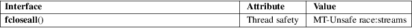

fcloseall − close all open streams
Standard C library (libc, −lc)
#define
_GNU_SOURCE /* See feature_test_macros(7) */
#include <stdio.h>
int fcloseall(void);
The fcloseall() function closes all of the calling process’s open streams. Buffered output for each stream is written before it is closed (as for fflush(3)); buffered input is discarded.
The standard streams, stdin, stdout, and stderr are also closed.
This function returns 0 if all files were successfully closed; on error, EOF is returned.
For an explanation of the terms used in this section, see attributes(7).

The fcloseall() function does not lock the streams, so it is not thread-safe.
GNU.
close(2), fclose(3), fflush(3), fopen(3), setbuf(3)